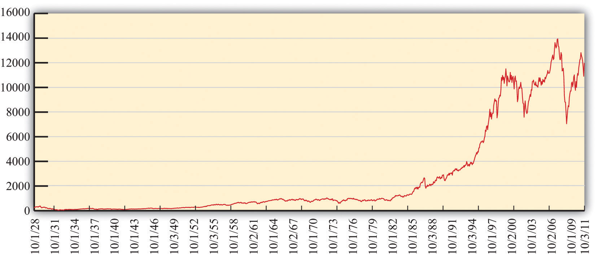

In 2006 and 2007, the financial district in Shanghai, China, was in a frenzy. Figure 10.1 "Shanghai Stock Exchange Index" shows the value of stocks in that market since its inception in 2000. Starting in early 2006, the value of stocks traded on this market exploded. The market rose by 130 percent in 2006; by May 2007, it was up over 50 percent for that year.See http://finance.yahoo.com/q/hp?s=000001.SS&=00&=1&=2006&=11&=31&=2007&=d&=66&=330. The market peaked in late 2007 and is currently at about 50 percent of that value. A lot of money was made by those who invested in the Shanghai market. And unfortunately a lot of money was lost.
Figure 10.1 Shanghai Stock Exchange Index

This figure shows the closing prices on the Shanghai stock exchange between January 2000 and April 2010. Stock prices rose rapidly from 2006, peaking in October 2007, but decreased substantially over the next year. In late 2009, stocks rebounded again.
These gains attracted many investors. Funds from abroad poured into Shanghai. The savings accounts of Chinese households were another source of investment funds. From a People’s Daily Internet article posted on May 13, 2007, we learn the following: “More than 70 billion yuan (9.1 billion U.S. dollars) was transferred from savings accounts in Shanghai to stock trading accounts in the first four months of this year, the Shanghai branch of the People’s Bank of China estimated on Saturday. In April alone, [savings deposits denominated in Chinese currency] with Chinese banking institutions decreased by 8.5 billion yuan (1.1 billion U.S. dollars).”“Chinese Pour Savings Deposits into Stock Market,” People’s Daily, May 13, 2007, accessed March 14, 2011, http://english.peopledaily.com.cn/200705/13/eng20070513_374113.html.
During May 2007, stories circulated about households spending many hours carefully evaluating individual stocks and market returns. At the same time, it appeared that many relatively uninformed individuals were simply betting on the market, gambling on a quick return.
We said that some investors made money in the Shanghai market. Does that mean there is a lot of money to be made by investing in that market? These phrases sound similar but mean very different things. It is one thing to look back at a market and say you could have made money investing in that market. It is quite another to forecast that you will be able to make a high return in a market in the future. Investors who were attracted to the market in late 2007 had a very different experience: they lost a lot of money. Those who came into market in late 2008 were again able to profit as the market value rose over the following year.
In this chapter, we study the markets for different kinds of assets. Assets include stocks—such as are traded in Shanghai, on Wall Street, and in other financial centers around the globe—but, as we will see, there are many other kinds of assets as well. Information on assets is easy to obtain. If you open almost any newspaper, the business section contains an enormous amount of detailed information on stocks sold in a variety of markets. That same section will contain information on bonds, which are another type of frequently traded asset. Part of our interest in this chapter is defining these assets more precisely. The terms stocks and bonds are used commonly, but we want to understand exactly what these assets are and how they are traded.
As we wrote this chapter, we had no idea whether we, too, should be putting our personal savings in the Shanghai stock exchange or in some other market around the globe. In the middle of 2007, it looked as if the surge in the Shanghai market was over. Market participants were concerned that the time of high gains had ended. Yet by November 2007, market values had again started to escalate. And then, as we said, the market peaked in late 2007 and decreased rapidly for the next year. This is part of the story of asset markets. They are extremely volatile and unpredictable. When you see these high returns in Shanghai and other markets, you might wonder:
“Can I get rich by trading stocks and bonds?”
This chapter begins with a walk down a fictionalized Wall Street, where we describe various kinds of assets. We focus mainly on financial markets, although we will look at other assets as well. Financial markets are familiar to many of us from the financial pages of newspapers or reports on the evening news. Such markets provide a link between borrowers and lenders (Figure 10.2). Many of us are borrowers from banks, perhaps because we have a student loan, a car loan, or a mortgage for a house. Much of what we borrow from banks comes from deposits placed in banks by other households. Firms also borrow in the financial markets. They issue stock and sell bonds in financial markets to finance their investment in new factories and machines.
Figure 10.2

Financial markets link borrowers and lenders.
We then turn to a discussion of the pricing of assets. We begin by thinking about an unusual asset: a fruit tree. A fruit tree gives us a certain amount of fruit each year, and the value of the tree depends on the value of the fruit it produces. We explain how to calculate the value of a fruit tree that lives for several years and yields an uncertain crop, and we show how exactly the same principles apply to the valuation of stocks, bonds, houses, and other assets. Finally, we explain why—if financial markets are functioning well—the price of an asset will equal its value.
Finally, we ask whether it is easy to make money by trading assets. We explain that the gains and losses from trading assets are based on two factors: (1) luck and (2) the skill of investors who quickly recognize profit opportunities before others notice these opportunities. If financial markets are functioning well, then it is very difficult for the casual investor to make money consistently by trading financial assets. And even if—as many believe—financial markets do not function perfectly, this still does not mean that there is easy money to be made.
Wall Street in New York City is the financial capital of the United States. There are other key financial centers around the globe: Shanghai, London, Paris, Hong Kong, and many other cities. These financial centers are places where traders come together to buy and sell assets. Beyond these physical locations, opportunities for trading assets abound on the Internet as well.
We begin the chapter by describing and explaining some of the most commonly traded assets. Ownership of an assetA resource whose ownership gives you the right to some future benefit or a stream of benefits. gives you the right to some future benefit or a stream of benefits. Very often, these benefits come in the form of monetary payments; for example, ownership of a stock gives you the right to a share of a firm’s profits. Sometimes, these benefits come in the form of a flow of services: ownership of a house gives you the right to enjoy the benefits of living in it.
One of the first doors you find on Wall Street is called the stock exchange. The stock exchange is a place where—as the name suggests—stocks are bought and sold. A stock (or share)An asset that comes in the form of (partial) ownership of a firm. is an asset that comes in the form of (partial) ownership of a firm. The owners of a firm’s stock are called the shareholders of that firm because the stock gives them the right to a share of the firm’s profits. More precisely, shareholders receive payments whenever the board of directors of the firm decides to pay out some of the firm’s profits in the form of dividendsA payment from a firm to a firm’s shareholders based on the firm’s profits..
Some firms—for example, a small family firm like a corner grocery store—are privately owned. This means that the shares of the firm are not available for others to purchase. Other firms are publicly traded, which means that anyone is free to buy or sell their stocks. In many cases, particularly for large firms such as Microsoft Corporation or Nike, stocks are bought and sold on a minute-by-minute basis. You can find information on the prices of publicly traded stocks in newspapers or on the Internet.
Most often, however, we hear not about individual stock prices but about baskets of stocks. The most famous basket of stocks is called the Dow Jones Industrial Average (DJIA). Each night of the week, news reports on the radio and television and newspaper stories tell whether the value of the DJIA increased or decreased that day. The DJIA is more than a century old—it started in 1896—and is a bundle of 30 stocks representing some of the most significant firms in the US economy. Its value reflects the prices of these stocks. Very occasionally, one firm will be dropped from the index and replaced with another, reflecting changes in the economy.You can learn more about the DJIA if you go to NYSE Euronext, “Dow Jones Industrial Average,” accessed March 14, 2011,http://www.nyse.com/marketinfo/indexes/dji.shtml.
Figure 10.3 The DJIA: October 1928 to July 2007
This figure shows the closing prices for the DJIA between 1928 and 2010.
Source: The chart is generated from http://finance.yahoo.com/q?s=^DJI.
Figure 10.3 "The DJIA: October 1928 to July 2007" shows the Dow Jones Industrial Average from 1928 to 2011. Over that period, the index rose from about 300 to about 12,500, which is an average growth rate of about 4.5 percent per year. You can see that this growth was not smooth, however. There was a big decrease at the very beginning, known as the stock market crash of 1929. There was another very significant drop in October 1987. Even though the 1929 crash looks smaller than the 1987 decrease, the 1929 crash was much more severe. In 1929, the stock market lost about half its value and took many years to recover. In 1987, the market lost only about 25 percent of its value and recovered quite quickly.
One striking feature of Figure 10.3 "The DJIA: October 1928 to July 2007" is the very rapid growth in the DJIA in the 1990s and the subsequent decrease around the turn of the millennium. The 1990s saw the so-called Internet boom, when there was a lot of excitement about new companies taking advantage of new technologies. Some of these companies, such as Amazon, went on to be successful, but most others failed. As investors came to recognize that most of these new companies would not make money, the market fell in value. There was another rise in the market during the 2000s, followed by a substantial fall during the global financial crisis that began around 2008. Very recently, the market has recovered again.
If these ups and downs in the DJIA were predictable, it would be easy to make money on Wall Street. Suppose you knew the DJIA would increase 10 percent next month. You would buy the stocks in the average now, hold them for a month, and sell them for an easy 10 percent profit. If you knew the DJIA would decrease next month, you could still make money. If you currently owned DJIA stocks, you could sell them and then buy them back after the price decreased. Even if you don’t own these stocks right now, there is still a way of selling first and buying later. You can sell (at today’s high price) a promise to deliver the stocks in a month’s time. Then you buy the stocks after the price has decreased. This is called a forward sale. If this sounds as if it is too easy a way to make money, that’s because it is. The ups and downs in the DJIA are not perfectly predictable, so there are no easy profit opportunities of the kind we just described. We have more to say about this later in the chapter.
Although the DJIA is the most closely watched stock market index, many others are also commonly reported. The Standard and Poor’s 500 (S&P 500) is another important index. As the name suggests, it includes 500 firms, so it is more representative than the DJIA. If you want to understand what is happening to stock prices in general, you are better off looking at the S&P 500 than at the DJIA. The Nasdaq is another index, consisting of the stocks traded in an exchange that specializes in technology-based firms.
We mentioned earlier that the DJIA has increased by almost 5 percent per year on average since 1928. On the face of it, this seems like a fairly respectable level of growth. Yet we must be careful. The DJIA and other indices are averages of stock prices, which are measured in dollar terms. To understand what has happened to the stock market in real terms, we need to adjust for inflation. Between 1928 and 2007, the price level rose by 2.7 percent per year on average. The average growth in the DJIA, adjusted for inflation, was thus 4.8 percent − 2.7 percent = 2.1 percent.
As a shareholder, there are two ways in which you can earn income from your stock. First, as we have explained, firms sometimes choose to pay out some of their income in the form of dividends. If you own some shares and the company declares it will pay a dividend, either you will receive a check in the mail or the company will automatically reinvest your dividend and give you extra shares. But there is no guarantee that a company will pay a dividend in any given year.
The second way you can earn income is through capital gainsIncome from an increase in the price of an asset.. Suppose you own a stock whose price has gone up. If that happens, you can—if you want—sell your stock and make a profit on the difference between the price you paid for the stock and the higher price you sold it for. Capital gains are the income you obtain from the increase in the price of an asset. (If the asset decreases in value, you instead incur a capital loss.)
To see how this works, suppose you buy, for $100, a single share of a company whose stock is trading on an exchange. In exchange for $100, you now have a piece of paper indicating that you own a share of a firm. After a year has gone by, imagine that the firm declares it will pay out dividends of $6.00 per share. Also, at the end of the year, suppose the price of the stock has increased to $105.00. You decide to sell at that price. So with your $100.00, you received $111.00 at the end of the year for an annual return of 11 percent:
(We have used the term return a few times. We will give a more precise definition of this term later. At present, you just need to know that it is the amount you obtain, in percentage terms, from holding an asset for a year.)
Suppose that a firm makes some profits but chooses not to pay out a dividend. What does it do with those funds? They are called retained earnings and are normally used to finance business operations. For example, a firm may take some of its profits to build a new factory or buy new machines. If a firm is being managed well, then those expenditures should allow a firm to make higher profits in the future and thus be able to pay out more dividends at a later date. Presuming once again that the firm is well managed, retained earnings should translate into extra dividends that will be paid in the future.
Furthermore, if people expect that a firm will pay higher dividends in the future, then they should be willing to pay more for shares in that firm today. This increase in demand for a firm’s shares will cause the share price to increase. So if a firm earns profits but does not pay a dividend, you should expect to get some capital gain instead. We come back to this idea later in the chapter and explain more carefully the connection between a firm’s dividend payments and the price of its stock.
Figure 10.3 "The DJIA: October 1928 to July 2007" reminds us that stock prices decrease as well as increase. If you choose to buy a stock, it is always possible its price will fall, in which case you suffer a capital loss rather than obtain a capital gain. The riskiness of stocks comes from the fact that the underlying fortunes of a firm are uncertain. Some firms are successful and earn high profits, which means that they are able to pay out large dividends—either now or in the future. Other firms are unsuccessful through either bad luck or bad management, and do not pay dividends. Particularly unsuccessful firms go bankrupt; shares in such a firm become close to worthless. When you buy a share in a firm, you have the chance to make money, but you might lose money as well.
Wall Street is also home to many famous financial institutions, such as Morgan Stanley, Merrill Lynch, and many others. These firms act as the financial intermediaries that link borrowers and lenders. If desired, you could use one of these firms to help you buy and sell shares on the stock exchange. You can also go to one of these firms to buy and sell bonds. A bondA promise to make cash payments to a bondholder at predetermined dates (such as every year) until the maturity date. is a promise to make cash payments (the couponThe cash payments paid to a bondholder.) to a bondholder at predetermined dates (such as every year) until the maturity date. At the maturity dateThe date of final payment of principal and interest on a bond., a final payment is made to a bondholder. Firms and governments that are raising funds issue bonds. A firm may wish to buy some new machinery or build a new plant, so it needs to borrow to finance this investment. Or a government might issue bonds to finance the construction of a road or a school.
The easiest way to think of a bond is that it is the asset associated with a loan. Here is a simple example. Suppose you loan a friend $100 for a year at a 6 percent interest rate. This means that the friend has agreed to pay you $106 a year from now. Another way to think of this agreement is that you have bought, for a price of $100, an asset that entitles you to $106 in a year’s time. More generally (as the definition makes clear), a bond may entitle you to an entire schedule of repayments.
Bonds, like stocks, are risky.
Inflation does not have the same effect on stocks as it does on bonds. If prices increase, then the fixed nominal payments of a bond unambiguously become less valuable. But if prices increase, firms will typically set higher nominal prices for their products, earn higher nominal profits, and pay higher nominal dividends. So inflation does not, in and of itself, make stocks less valuable.
Toolkit: Section 31.8 "Correcting for Inflation"
You can review the meaning and calculation of the inflation rate in the toolkit.
One way to see the differences in the riskiness of bonds is to look at the cost of issuing bonds for different groups of borrowers. Generally, the rate at which the US federal government can borrow is much lower than the rate at which corporations borrow. As the riskiness of corporations increases, so does the return they must offer to compensate investors for this risk.
As you continue to walk down the street, you are somewhat surprised to see a real estate office and a car dealership on Wall Street. (But this is a fictionalized Wall Street, so why not?) Real estate is another kind of asset. Suppose, for example, that you purchase a home and then rent it out. The rental payments you receive are analogous to the dividends from a stock or the coupon payments on a bond: they are a flow of money you receive from ownership of the asset.
Real estate, like other assets, is risky. The rent you can obtain may increase or decrease, and the price of the home can also change over time. The fact that housing is a significant—and risky—financial asset became apparent in the global financial crisis that began in 2007. There were many aspects of that crisis, but an early trigger of the crisis was the fact that housing prices decreased in the United States and around the world.
If you buy a home and live in it yourself, then you still receive a flow of services from your asset. You don’t receive money directly, but you receive money indirectly because you don’t have to pay rent to live elsewhere. You can think about measuring the value of the flow of services as rent you are paying to yourself.
Our fictional Wall Street also has a car dealership—not only because all the financial traders need somewhere convenient to buy their BMWs but also because cars, like houses, are an asset. They yield a flow of services, and their value is linked to that service flow.
Further down the street, you see a small store listing a large number of different three-letter symbols: BOB, JPY, CND, EUR, NZD, SEK, RUB, SOS, ADF, and many others. Stepping inside to inquire, you learn that that, in this store, they buy and sell foreign currencies. (These three-letter symbols are the currency codes established by the International Organization for Standardization (http://www.iso.org/iso/home.htm). Most of the time, the first two letters refer to the country, and the third letter is the initial letter of the currency unit. Thus, in international dealings, the US dollar is referenced by the symbol USD.)
Foreign currencies are another asset—a simple one to understand. The return on foreign currency depends on how the exchange rate changes over the course of a year. The (nominal) exchange rate is the price of one currency in terms of another. For example, if it costs US$2 to purchase €1, then the exchange rate for these two currencies is 2. An exchange rate can be looked at in two directions. If the dollar-price of a euro is 2, then the euro price of a dollar is 0.5: with €0.5, you can buy US$1.
Suppose that the exchange rate this year is US$2 to the euro, and suppose you have US$100. You buy €50 and wait a year. Now suppose that next year the exchange rate is US$2.15 to the euro. With your €50, you can purchase US$107.50 (because US$(50 × 2.15) = US$107.50). Your return on this asset is 7.5 percent. Holding euros was a good investment because the dollar became less valuable relative to the euro. Of course, the dollar might increase in value instead. Holding foreign currency is risky, just like holding all the other assets we have considered.The currency market is also discussed in Chapter 8 "Why Do Prices Change?".
The foreign exchange market brings together suppliers and demanders of different currencies in the world. In these markets, one currency is bought using another. The law of demand holds: as the price of a foreign currency increases, the quantity demanded of that currency decreases. Likewise, as the price of a foreign currency increases, the quantity supplied of that currency increases. Exchange rates are determined just like other prices, by the interaction of supply and demand. At the equilibrium exchange rate, the quantity of the currency supplied equals the quantity demanded. Shifts in the supply or demand for a currency lead to changes in the exchange rate.
Toolkit: Section 31.20 "Foreign Exchange Market"
You can review the foreign exchange market and the exchange rate in the toolkit.
Having recently read about the large returns on the Shanghai stock exchange and having seen that you can buy Chinese currency (the yuan, which has the international code CNY), you might wonder whether you can buy shares on the Shanghai stock exchange. In general, you are not restricted to buying assets in your home country. After all, there are companies and governments around the world who need to finance projects of various forms. Financial markets span the globe, so the bonds issued by these companies and governments can be purchased almost anywhere. You can buy shares in Australian firms, Japanese government bonds, or real estate in Italy.Some countries have restrictions on asset purchases by noncitizens—for example, it is not always possible for foreigners to buy real estate. But such restrictions notwithstanding, the menu of assets from which you can choose is immense. Indeed, television, newspapers, and the Internet report on the behavior of both US stock markets and those worldwide, such as the FTSE 100 on the London stock exchange, the Hang Seng index on the Hong Kong stock exchange, the Nikkei 225 index on the Tokyo stock exchange, and many others.
You could buy foreign assets from one of the big financial firms that you visited earlier. It will be happy to buy foreign stocks or bonds on your behalf. Of course, if you choose to buy stocks or bonds associated with foreign companies or governments, you face all the risks associated with buying domestic stocks and bonds. The dividends are uncertain, there might be inflation in the foreign country, the price of the asset might change, and so on. In addition, you face exchange rate risk. If you purchase a bond issued in Mexico, you don’t know what exchange rate you will face in the future for converting pesos to your home currency.
You may feel hesitant about investing in other countries. You are not alone in this. Economists have detected something they call home bias. All else being equal, investors are more likely to buy assets issued by corporations and governments in their own country rather than abroad.
Toward the end of your walk, you are particularly surprised to see a casino. Stepping inside, you see a casino floor, such as you might find in Las Vegas, Monaco, or Macau near Hong Kong. You are confronted with a vast array of betting opportunities.
The first one you come across is a roulette wheel. The rules are simple enough. You place your chip on a number. After the wheel is spun, you win if—and only if—you guessed the number that is called. There is no skill—only luck. Nearby are the blackjack tables where a version of 21 is played. In contrast to roulette, blackjack requires some skill. As a gambler in blackjack, you have to make choices about taking cards or not. The objective is to get cards whose sum is as high as possible without going over 21. If you do go over 21, you lose. If the dealer goes over 21 and you don’t, you win. If neither of you goes over 21, then the winner is the one with the highest total. There is skill involved in deciding whether or not to take a card. There is also a lot of luck involved through the draw of the cards.
You always thought of stocks and bonds as serious business. Yet, as you watch the players on the casino floor, you come to realize that it might not be so peculiar to see a casino on Wall Street. Perhaps there are some similarities between risking money at a gambling table and investing in stocks, bonds, or other assets. As this chapter progresses, you will see that there are some similarities between trading in financial assets and gambling in a casino. But you will learn that there are important differences as well.
Our basic explanation of assets reveals that there are two ways in which you can earn money from holding an asset: (1) You may receive some kind of payment that we call a flow benefit—a dividend payment from a stock, a coupon payment from a bond, a rental check from an apartment, and so on. (2) The price of the asset may increase, in which case you get a capital gain. You might guess that the price of an asset should be linked in some way to the payments you get from the asset, and you would be right. In this section, we explain how to determine the price of an asset. To do so, we use two tools: discounted present value and expected value.These tools are discussed at length in Chapter 5 "Life Decisions".
Toolkit: Section 31.4 "Choices over Time" and Section 31.7 "Expected Value"
You can review the meaning and calculation of discounted present value and expected value in the toolkit.
Imagine that you own a very simple asset: an orange tree. The orange tree pays a “dividend” in the form of fruit that you can sell. What is the value to you of owning such a tree? You can think of this value as representing the most you would be willing to pay for the orange tree—that is, your valuation of the tree. As we proceed, we will link this value to the price of the orange tree.
We begin by supposing your orange tree is very simple indeed. Next year, it will yield a crop of precisely one orange. That orange can be sold next year for $1. Then the tree will die. We suppose that you know all these things with certainty.
The value to you of the orange tree today depends on the value of having $1 next year. A dollar next year is not worth the same as a dollar this year. If you have a dollar this year, you can put it in the bank and earn interest on it. The technique of discounted present value tells us that you must divide next year’s dollar by the nominal interest factor to find its value today:
Here and for the rest of this chapter we use the nominal interest factor rather than the nominal interest rate to make the equations easier to read. The interest factor is 1 plus the interest rate, so whenever the interest rate is positive, the interest factor is greater than 1. We use the nominal interest factor because the flow benefit we are discounting has not been corrected for inflation. If this flow were already corrected for inflation, then we would instead discount by the real interest factor.
Toolkit: Section 31.6 "The Credit Market"
You can review nominal and real interest rates and nominal and real interest factors in the toolkit.
To see why this formula makes sense, begin with the special case of a nominal interest rate that is zero. Then using this formula, the discounted present value of a dollar next year is exactly $1. You would be willing to pay at most $1 today for the right to receive $1 next year. Similarly, if you put $1 in a bank paying zero interest today, you would have exactly $1 in the bank tomorrow. When the nominal interest rate is zero, $1 today and $1 next year are equally valuable. As another example, suppose the nominal interest rate is 10 percent. Using the formula, the discounted present value is = $0.909. If you put $0.909 in a bank account paying a 10 percent annual rate of interest (an interest factor of 1.1), then you would have $1 in the bank at the end of the year.
Our orange tree was a very special tree in many ways. Now we make our tree more closely resemble real assets in the economy. Suppose first that the tree lives for several years, yielding its flow benefit of fruit for many years to come. Finding the value of the tree now seems much harder, but there are some tricks that help us determine the answer. Orange trees—like stocks, bonds, and other assets—can be bought and sold. So suppose that next year, you harvest the crop of one orange, sell it, and then also sell the tree. Using this strategy, the value of the tree is as follows:
The first term is the same as before: it is the discounted present value to you of the crop next year ($1.00 in our example). The second term is the price that you can sell the tree for next year. After all, if the tree lives for 10 years, then next year it will still have 9 crops remaining and will still be a valuable asset.
This expression tells us something very important. The value of an asset depends on
The insight that the value of the tree equals the value of the crop plus next year’s price greatly simplifies the analysis. If you know the price next year, then you know the value of the tree to you this year. Of course, we do not yet know how the price next year is determined; we come back to that question later.
We can now give a more precise definition of the return on an assetThe amount you obtain, in percentage terms, from holding the asset for a year.: it is the amount you obtain, in percentage terms, from holding the asset for a year. The return has two components: a flow of money (such as a dividend in the case of a stock) and the price of the asset. In the case of the orange tree, the return is calculated as
Because we know that
it follows that
In this simple case, the return on the asset is equal to the nominal interest rate. If we wanted the real return, we would use the real interest factor (1 + the real interest rate) instead.
So far we have assumed that you know the orange crop with certainty. This is a good starting point but is not realistic if we want to use our story to understand the value of actual assets. We do not know for sure the future dividends that will be paid by a company whose stock we might own. Nor do we know the future price of a stock or a bond.
Looking back at the tree that lives for one year only, imagine you do not know how many oranges it will yield. Start by assuming that you can buy a tree that lasts for one period and whose crop is not known with certainty. The value of the tree depends on the following.
Toolkit: Section 31.7 "Expected Value"
You can review the concepts of risk aversion and risk-neutrality in the toolkit.
Table 10.1 Expected Crop from an Orange Tree
| Outcome (Number of Oranges) | Probability | Probability × Outcome |
|---|---|---|
| 0 | 0.1 | 0 |
| 1 | 0.5 | 0.5 |
| 2 | 0.4 | 0.8 |
The easiest way to see how the risk premium works is to recognize that someone who is risk-averse will demand a higher return to hold a risky asset. Earlier, we said that the return on an asset without risk equals the nominal interest rate. In the case of a risky asset, however,
From this we can see that there is a relationship between risk and return. If the crop is not risky, then the risk premium is zero, so the return equals the nominal interest rate. As the crop becomes riskier, the risk premium increases, causing an increase in the return per dollar invested.
We can see how the risk premium affects the value of the tree by rearranging the equation:
For a given expected crop, the higher is the risk premium, the lower is the value of the tree.
We have been talking about orange trees because they nicely illustrate the key features of more complex assets. We can combine the insights from our analysis of the orange tree to obtain a fundamental equation that we can use to value all kinds of assets:
We apply this equation throughout the remainder of the chapter. To keep things simple, however, we will suppose most of the time that there is no risk premium—that is, we will discount using the nominal interest factor alone, except when we explicitly want to talk about the riskiness of different assets. We can now use this formula to value assets that are more familiar, such as bonds, stocks, cars, and houses.
Suppose that you want to value a bond that lasts only one year. You will receive a payment from the borrower next year and then—because the bond has reached its maturity date—there will be no further payments. Naturally enough, the bond is worthless once it matures, so its price next year will be zero. This bond is like the first orange tree we considered: it delivers a crop next year and then dies. Hence we can value the bond using the formula
For example, if the coupon on the bond called for a payment of $100 next year and the nominal interest rate was zero, then the value of the bond today would be $100. But if the nominal interest rate was 10 percent, then the value of the bond today would be = $90.91.
If the bond has several years until maturity,
This expression for the value of a bond is very powerful. It shows that a bond is more valuable this year if
We explained earlier that bonds are subject to inflation risk. There are two ways of seeing this in our example. Imagine that inflation increases by 10 percentage points.
This inflation means that the coupon payment next year will be worth less in real terms—that is, in terms of the amount of goods and services that it will buy. Also, from the Fisher equation, we know that increases in the inflation rate translate into changes in the nominal interest rate. If inflation increases by 10 percentage points and the real rate of interest is unchanged, then the nominal rate increases by 10 percentage points. So the discounted present value of the bond decreases. Inflation risk might cause a bondholder to include a risk premium when valuing the bond.
Toolkit: Section 31.8 "Correcting for Inflation"
You can review the Fisher equation in the toolkit.
Now let us use our general equation to evaluate the dividend flow from stock ownership. Imagine you are holding a share of a stock this year. You can hold it for a year, receive the dividend payment if there is one, and then sell the stock. For now we treat both the dividend and the price next year as if they are known for sure. What is the value of a share under that plan?
This equation is similar to the one we used for the fruit tree and the bond. The flow benefit in this case is the dividend paid on the stock. Because the dividend is received next year, we have to discount it back to the current year using the nominal interest factor. The other part of the value of the share comes from the fact that it can be sold next year. Again, that share price must be discounted to put it in today’s terms. If the share does not pay a dividend next year, then its value is even simpler: the value of the share this year equals its price next year discounted by the nominal interest factor.
The return to owning the share comes in two forms: the dividend and the gain from selling the share next year. To calculate the return per dollar invested, we divide the dividend and future price by the value of a share this year:
Table 10.2 "Discounted Present Value of Dividends in Dollars" shows an example where we calculate the value of a stock using two different interest rates: 5 percent and 10 percent.
Table 10.2 Discounted Present Value of Dividends in Dollars
| Dividend | Price Next Year | Discounted Present Value (5%) | Discounted Present Value (10%) |
|---|---|---|---|
| 1 | 2 | 2.86 | 2.73 |
| 1 | 4 | 4.76 | 4.55 |
| 2 | 4 | 5.71 | 5.45 |
There are other familiar assets that can also be valued in the same way. A house is an asset that delivers a benefit each year in the form of providing shelter. The value of a house is the flow of services that it provides over the coming year plus the price it could be sold for next year. Of course, instead of living in your house and enjoying the service flow, you could rent it out instead. Then
For a house and similar assets, the value today reflects
This completely parallels what we have already found for both bonds and stocks.
So far we have focused on the value of an asset to an individual: “What is the value to you of the asset (fruit tree, bond, stock, car, house, etc.) you are holding?” Now we want to go a step further and see what the market price is for the asset. We already know that the two are connected. For example, when we valued a bond, we wrote
Part of the value of a bond to you is the price you can sell it for on the market next year. Now we explain that the current price of a bond is closely connected to its current value.
Assets are traded in markets around the world. Typically, there are a large number of (potential) buyers and sellers for any given asset: thousands of people might be willing to buy Microsoft Corporation stock or sell government bonds if they felt the price was right. Also, assets are homogeneous: one US government 10-year bond is the same as another. This means that asset markets are a good example of competitive markets, which means that we can look at asset markets using supply and demand.
Toolkit: Section 31.9 "Supply and Demand"
You can review supply and demand and competitive markets in the toolkit.
To derive the supply and demand curves for assets, we use the idea of arbitrageThe act of buying and then selling an asset to take advantage of profit opportunities.. This is the act of buying and then reselling an asset to take advantage of profit opportunities. The idea of arbitrage is to “buy low” and “sell high.” Arbitrage is usually carried out across two markets to profit from any difference in prices. The strict definition of arbitrage refers to buying and selling where there is no risk, meaning that profits can be made with certainty. A weaker meaning of arbitrage allows risk to be associated with the process.
Figure 10.4 Arbitrage at a Coffee Shop

Imagine you passed a coffee shop and saw the sign shown in Figure 10.4 "Arbitrage at a Coffee Shop". This would make an economist salivate, not because of the prospect of good coffee but because it presents an opportunity for arbitrage. Facing an offer like this, you could immediately go and buy a pound of coffee beans for $10. Then you could turn around and sell the coffee at $12 per pound. You would have made $2 easy profit. Forget about drinking the coffee: just buy and sell, buy and sell, pound after pound—and become a billionaire. This is an example of arbitrage.
Sadly, you will never see a coffee shop making you an offer like this. We are confident of this because any coffee shop that made such an offer would very quickly go out of business. After all, if you can make a profit by buying at a low price and selling at a high price, then whoever is on the other side of these transactions is making a loss.
We can think about arbitrage using the supply-and-demand framework. There are two markets: in one the coffee shop sells coffee, while in the other the coffee shop buys coffee. The demand of potential buyers would be extremely large, and the supply of coffee (from people selling it back) would likewise be very large. With the prices for buying and selling coffee as stated in the sign, demand could never equal supply in these two markets. An arbitrage possibility like this is not consistent with market equilibrium.
Using similar logic, we can argue that the price of an asset will equal its value. To see why, we begin again with an orange tree that will yield an orange worth $1 next year. Owners of this asset value it at
They will be willing to sell the asset at this price but not if the price is any lower. They would definitely want to sell if the price were higher. But buyers can perform exactly the same calculation. They would be willing to buy the asset at this price but not if the price were any higher. They would definitely want to buy if the price were lower. Figure 10.5 "Asset Demand and Supply" shows the supply of and demand for trees in this case.
Figure 10.5 Asset Demand and Supply

(a) Owners of trees are willing to sell at a price equal to the discounted present value of the tree, and the supply curve is flat (perfectly elastic) up to the total available stock of trees. (b) Potential buyers of trees are willing to buy at a price equal to the discounted present value of the tree, and the demand curve is flat (perfectly elastic).
The supply side is shown in part (a) of Figure 10.5 "Asset Demand and Supply". There is a given stock of trees available. For prices below the asset value, no one wants to sell the asset. At prices above the value, everyone wants to sell the asset. So the supply curve is horizontal at a price equal to the asset value, all the way up to the point where every tree is on the market. At that point, the supply curve becomes vertical. The demand function is in part (b) of Figure 10.5 "Asset Demand and Supply". At a price above the discounted present value of the tree, the quantity demanded is zero: no one will pay more than the discounted present value for the asset. If the price equals the value, the demand is flat (horizontal). At a price below the value, the asset looks like a great deal because there are arbitrage opportunities. So demand is very large.
Figure 10.6 Asset Market Equilibrium

Because buyers and sellers place the same value on the tree, the demand and supply curves lie on top of each other at this value, so the price will equal the discounted present value of the tree.
We put these curves together in Figure 10.6 "Asset Market Equilibrium". Both supply and demand are horizontal at a price equal to the discounted present value of the asset. Thus at this price, and at this price only, supply equals demand. We obtain a powerful prediction: assets will be priced at their discounted present value. If we see the prices of assets (such as stocks or bonds) increase or decrease, this model of the asset market tells us to attribute these variations to changes in the discounted present value of dividends.
The supply and demand curves in these figures look rather untraditional. We are used to seeing upward sloping supply curves and downward sloping demand curves. But in the market for the tree, everyone values the asset in exactly the same way. That valuation is given by the discounted present value of the dividend stream. As a result, Figure 10.6 "Asset Market Equilibrium" does not tell us how much people will trade or if they will trade at all. When the price equals the discounted present value, buyers are indifferent about buying, and sellers are indifferent about selling. Everyone is happy to trade, but no one particularly wants to trade. In reality, though, the market for an asset may look much more like a “normal” supply-and-demand diagram, as in Figure 10.7 "Asset Market Equilibrium: A More Familiar View", with an upward-sloping supply curve and downward-sloping demand curve. The reason is that different individuals may have differing views about the discounted present values of the asset, becauseChapter 6 "eBay and craigslist" discusses in some detail the reasons why people trade. We explain that important motives for trade are that people have different tastes and skills. To these we can add the two motives just mentioned here.
Figure 10.7 Asset Market Equilibrium: A More Familiar View

If potential buyers and sellers of an asset differ in their beliefs about the dividend from that asset or differ in terms of their degree of risk aversion, then we obtain demand and supply curves of the familiar form.
For example, suppose some buyers are optimistic about future dividends from a stock, while others are pessimistic. Optimistic buyers will calculate a high discounted present value and have a high willingness to pay. Pessimistic buyers will calculate a lower discounted present value and be willing to pay less for the asset. Such differences in views can hold for sellers as well. Alternatively, suppose some buyers and sellers are more risk-averse than others. The less risk-averse the buyer, the higher the price he is willing to pay because he uses a lower risk premium when calculating his discounted present value. The less risk-averse the seller, the higher the price she is willing to accept.
There is one last, more subtle point. We have been imprecise—intentionally—about what exactly it means for an asset to be risky. Buyers and sellers care not only about assets in isolation but also about how those assets fit into their entire portfolio—that is, the entire collection of assets that they own. An asset that seems very risky to one person may appear less risky to another because he holds other assets that balance out the risks. The riskiness of an individual asset depends on the diversification of the portfolio as a whole.
In Figure 10.6 "Asset Market Equilibrium", all traders in the market valued the asset in exactly the same way, so arbitrage guaranteed that the price equals the discounted value of the flow benefit. In Figure 10.7 "Asset Market Equilibrium: A More Familiar View", there is no immediate guarantee that this will still be true. Even with differences in valuation, however, we expect that the price of an asset is still likely to be (at least approximately) equal to its true discounted present value. In particular, if some traders in the market do not care about risk and are accurately informed about the flow benefit, arbitrage will still keep the market price close to the discounted present value of the stock.
We have not yet explained how supply and demand actually come together in financial markets—that is, who actually makes the market? If you study the workings of a market such as the New York Stock Exchange, you will learn that it works through specialized traders. If you want to buy a stock, you typically contact a stockbroker who communicates your demand to his firm on Wall Street. Another broker then takes that order onto the floor of the stock exchange and looks for a seller. If a seller is found, then a deal can be made. Otherwise, the broker can place your order with another specialist who essentially “makes the market” by buying and selling securities at posted prices. So in the end, the market has some elements of posted prices (take-it-or-leave-it offers) and some elements of a double-oral auction.Both of these are discussed in more detail in Chapter 6 "eBay and craigslist".
Previously, we explained how to value an asset assuming you hold it for one year, receive the flow benefit (the fruit, the dividend, or the coupon payment), and then sell it at the current market price. We said that (assuming no risk premium)
We have also discovered that, in general,
value of asset = price of asset.We combine those two pieces of information to complete our study of the valuation of assets. Imagine an orange tree that lives for two years and yields a crop valued at $1 each year. We already know that we can value the tree as follows:
But now we know that the price of the tree next year will equal the value of the tree next year:
Next year, we can apply exactly the same formula:
Why is this true? The year after next, this particular tree will be worthless because it will be dead. So the value of the tree today is
This is a more complicated formula. It tells us that the value of the tree today is the discounted present value of the flow benefit tomorrow plus the discounted present value of the value of the tree tomorrow—which is itself the discounted present value of the flow benefit the year after. In other words, the value of the tree today is the discounted present value of the flow benefits over the entire lifetime of the tree. What is more, we could use exactly the same logic if the tree were to yield a crop for 3 years, 10 years, or 100 years.
There is one last step. If we again use the idea that the price of the tree should equal its value, then we can conclude the following:
price of tree this year = discounted present value of the flow of benefits from the tree.This logic applies to all assets, not only trees, so we can now apply it to bonds and stocks:
price of bond today = discounted present value of the flow of payments from the bondand
price of share today = discounted present value of the flow of dividend payments.A final note on uncertainty. We have been assuming that dividends are known with certainty. If they are not, then we need to modify the valuation of the stock by (1) replacing “dividend” with “expected dividend” and (2) adding a risk premium to the interest rate. As discussed previously, the adjustment for risk will reflect both the riskiness of the stock and the aversion to risk of investors. Riskier stocks generally have a lower value and a higher expected return.
The title of this chapter speaks of making and losing money on Wall Street. We have gone into considerable detail about what determines the price of assets, but we have not yet discussed how easy or hard it is to make money by buying and selling these assets.
Our fictional Wall Street contained places where you could buy many different kinds of assets, such as real estate and automobiles as well as stocks and bonds. But it also contained a building that wasn’t selling assets at all: the casino.
Is buying and selling shares like gambling on a roulette wheel, where gains and losses are purely a matter of luck? To answer this question, think more about the uncertainty associated with buying stocks and bonds. Suppose we are buying a stock that will pay dividends over four years, as in Table 10.3 "Discounted Present Value of Dividends in Dollars", and suppose that the interest rate is 5 percent. From Table 10.3 "Discounted Present Value of Dividends in Dollars", we know that the discounted present value of the stock is $609.61. We then expect this will also be the price of the stock.
Table 10.3 Discounted Present Value of Dividends in Dollars
| Year | Dividend ($) | Discounted Present Value ($, Interest Rate = 5%) |
|---|---|---|
| 1 | 100 | 95.2381 |
| 2 | 90 | 81.63265 |
| 3 | 120 | 103.6605 |
| 4 | 400 | 329.081 |
| Discounted present value (all years) | 609.61 |
Can you make money buying and selling this stock? It seems unlikely. If the price of a stock is equal to the present discounted value of the flow of dividends, then you get what you pay for. If you sell the stock, then instead of an asset that would have paid you the equivalent of $609.61, you receive $609.61 in cash. If you buy the stock, the reverse is true. Either way, you are no richer or poorer after the transaction; you are just holding your wealth in a different form.
Economists often use the metaphor of $100 bills lying on the ground to describe a situation where easy money can be made. Our example of the arbitrage opportunity in the coffee shop, where you could buy beans at $10 a pound and resell them at $12 a pound, is an example: getting rich in that coffee shop is as easy as picking up money on the floor. But if the value of a stock is the discounted present value of the dividends that it will pay, then there is no easy money to be made. There are no $100 bills lying around. You should not anticipate spectacular earnings from owning assets. You can earn a reasonable rate of return, equal to the nominal interest rate, but no more. A market with the characteristic that you cannot expect to earn abnormal profits is called an efficient marketOne in which the price of an asset equals the discounted present value of the flow of benefits.. In such a market, the price of an asset accurately reflects the best forecast of the value of that asset. The value of an asset is the discounted present value of the flow benefits.
Yet this may strike you as odd. There are many people who certainly make it rich by buying and selling stocks, bonds, and other assets. Some of these individuals—like Warren Buffett or George Soros—are household names. Does the fact that some people get very rich on Wall Street mean that markets are not efficient?
There are a couple of possible answers to this question. The first is that even when markets are efficient, some people may get rich. Go back to the stock we were considering earlier but with one small change. Imagine that the numbers in Table 10.3 "Discounted Present Value of Dividends in Dollars" are now expected dividends. They tell you what this stock can be expected to pay out on average, but they are not guaranteed. For example, it might be the case that in year four, the firm will pay a dividend of $800 with 50 percent probability but will also pay $0 with 50 percent probability. The expected dividend is $400. If people care only about the expected value of the dividends (if they are risk-neutral), the price of the stock still equals the (expected) discounted present value.
Now, there are still no $100 bills on the ground. You cannot expect to make unusual profits by buying this stock or others like it. However, some people will get lucky and thus get rich. If you bought this stock, and it ended up paying the high dividend, you would end up with a return nicely above the market interest rate. If it failed to pay the dividend, however, you would get a lower return than the market interest rate. As we looked around the economy, we would see some lucky investors earning high returns and other unlucky investors earning low returns. In this world, buying and selling assets in the stock market is really not that different from betting on a roulette wheel. Buying an asset is like placing your chip on a certain number. If the number comes up, you get rich. If it does not, you lose.
When you go to a casino, you should not expect to win at roulette. But this does not mean that you can never earn spectacular amounts of money. It happens frequently: casinos thrive on advertising these success stories. The same goes for buying an asset, such as a stock. Suppose you buy a share in a pharmaceutical company. The price of the share when you purchase it might indeed equal the expected discounted present value of dividends. Yet the following week the company could have a major discovery that will allow it to be much more profitable in the future. Expected dividends will increase, and so will the stock price. This is certainly good news for you. But it is also no different from getting lucky on the roulette wheel.
Spectacular successes tend to be more visible than losses. In the 1990s, some people earned large amounts (sometimes spectacularly large amounts) from certain successful Internet companies. But many other people lost money on Internet companies that were ultimately unsuccessful, and you are less likely to hear about them.
More than luck is required when investing on Wall Street, however. Just as there are skilled players of blackjack in the casino, there are people who are skilled in assessing the prospects of different firms in an economy.
If the price of a share equals the discounted present value of the dividends that a company will pay, then the total value of all the shares in a company should equal the discounted present value of the total profits the firm will pay out—both now and in the future. The total value of all the outstanding shares in a firm is called its market capitalizationThe total value of all the outstanding shares in a firm..
The price of a share increases whenever a firm’s market capitalization increases, and a firm’s market capitalization should increase whenever there is reason to think that the firm has become more profitable—either now or in the future. If markets are efficient, therefore, we expect share prices to respond to new information about a firm. Traders in large financial firms make their money in part by gathering new information about firms and then acting very quickly on that new information. News about a firm—good or bad—is likely to be incorporated quickly into a firm’s market price, but a trader who can move fast can make money from these movements.
When economists use the metaphor of $100 bills lying on the ground, they are pointing out that if opportunities for easy profits arise, they will disappear very quickly. It is not impossible that someone will drop a $100 bill. But it is highly unlikely that that bill will lie unretrieved for more than a few minutes. If there is easy money to make in the market by buying a stock, professional traders will jump on the opportunity quickly. This has an important implication for the rest of us. If you read in the newspaper today that Merck Pharmaceuticals has just announced a new pharmaceutical compound that is highly effective in treating lung cancer, there is no point in calling your broker and instructing him to buy Merck stock on the basis of this news. Somebody—a very smart trader with her ear to the ground and lots of knowledge about the pharmaceutical industry—might well have made money buying Merck stock at the first hint of this news. But by the time there is an announcement in the paper, the increase in Merck’s expected profits has long been factored into the price.
The theory of efficient financial markets is very powerful because it gives us a key to understanding the prices of assets. Go back to our equation for the value of an asset:
In the case of a share, the flow benefit is the value of the dividend. If the price next year is the discounted present value of further dividends from that point in time onward, then this equation is another way of saying that the value of the share today equals the discounted present value of dividends.
But what if the price that everyone expects an asset to sell for next year is—for some reason—much higher than the discounted present value of the flow benefit from the asset starting next year? As an example, consider a house. You buy a house in part to enjoy living in it—to enjoy “housing services.” You also buy a house as a possible source of capital gains if the price of the house increases. Imagine you live somewhere where everyone seems to think housing prices will increase a lot over the next few years. Then you should be willing to pay more for a house. After all, if you anticipate a large capital gain in five years from selling the house, you can pay more for it now and still expect a good return. So if everyone expects the price of houses to increase in the future, then the current demand for houses increases, so the current price increases. The price increase today reflects the expectation of higher prices in the future.
Now fast forward to next year. We can say the same thing applied to next year: “If everyone expects the price of houses to increase in the future, then the current demand for houses increases, so the current price increases.” This can go on from year to year: housing prices are high because everyone expects higher prices in the future. Higher prices have an element of self-fulfilling prophecy: prices increase because everyone thinks prices will continually increase.
This is sometimes called a housing bubble. In a bubble, the increase in the price of housing does not reflect an increase in the value people place in housing services. In the language of economics, the price is not changing because of any change in the fundamentals. Furthermore, it is possible that prices will not actually keep increasing. If everyone suddenly becomes more pessimistic about the future of housing prices, then the capital gains that everyone anticipated are gone, and housing prices collapse. In this case, the bubble bursts, and prices fall—sometimes very rapidly.
Many economists think that something like this happened in the early stages of the global financial crisis that started in around 2007. The price of housing in many markets had been increasing substantially, and people expected this to continue. At some point, people stopped being so confident that house prices would keep increasing—and, sure enough, the price of houses then decreased rapidly.
The same idea applies to stocks. If everyone believes the value of a particular stock will be higher in the future, then the price will be bid up today. If these beliefs persist, they can sustain a bubble in the stock. If everyone believes that stocks will generally increase in price, then this can lead to a bubble in the entire stock market.
Data on the prices of stocks can perhaps help us see if the efficient market view is accurate, or if we instead see lots of bubbles. This sounds like an easy exercise but is actually very hard. It is difficult to calculate the discounted present value of expected dividends because it requires forecasts of the future. The usual interpretation of this evidence is that the efficient market hypothesis is not capable of explaining all the variations in asset prices, particularly over short periods of time.
An extreme example illustrates this point well. Here is a quotation from an article that appeared in the Wall Street Journal after the collapse in the US stock market in 1987: “Calmly appraised, the intrinsic value of American industry didn’t fall 23 percent in a day.”Roger Lowenstein, “After the Fall: Some Lessons Are Not So Obvious,” Wall Street Journal, August 25, 1997. “The intrinsic value of American industry” refers to the total market capitalization of all the firms quoted on the stock exchange. It is hard to explain such short-run variations in asset prices from the perspective of discounted present value of dividends.
Economist Robert Shiller claims that stock markets can exhibit “irrational exuberance.” He argues that asset prices move around too much to be explained by theories that rely on the discounted present value of dividends to the price of assets. Instead, the fluctuation of prices, at least over short periods of time, might also be influenced by expectations and bubbles. More generally, Shiller is one of many financial economists who believe that economic theory needs to be supplemented with some ideas from social psychology to do a better job of explaining the performance of financial assets. Such behavioral financeThe incorporation of some ideas from psychology into the theory of financial markets. has identified several anomalies—that is, occasions on which asset prices apparently diverge from the values predicted by efficient market theory.
Despite the insights of behavioral finance, most economists take the view that, at the very least, efficient market theory is the best starting point for thinking about asset prices. Efficient market theory provides us with two key insights: (1) the price of a stock should reflect expectations about future profits, which means that (2) the price of a stock should change when—and only when—there is new information that changes those expectations. Many economists nonetheless think this approach is incomplete and that behavioral finance can also help us understand financial markets. A word of caution: even if markets are not always efficient, this still does not mean that there are easy ways to make money on Wall Street.
Each weekday in the United States, around 5 p.m. Eastern Standard Time, there are reports on the performance of the markets that day. At other times of the day, you can learn about other markets around the world. Newscasters report on the volume of trade (the number of shares exchanged) and some index of the price of stocks, such as the DJIA. In economic terms, these are reports about the price and quantity in a market. Therefore we can use the supply-and-demand framework, and more specifically the tool of comparative statics, to consider what makes asset prices increase and decrease.
Toolkit: Section 31.16 "Comparative Statics"
You can review how to carry out a comparative statics exercise in the toolkit.
If we take the efficient-market view that the price of an asset equals its discounted present value, then any change in the price of an asset must be due to some change in its expected discounted present value. If, for example, the price of General Motors stock increases, this should reflect some information about the prospects and hence future dividends of this company. Moreover, any information that makes the price increase or decrease must be new. If it were old information that everyone in the market already knew, then it would have already been factored into the stock price. Hundred-dollar bills do not stay on the ground for long. So what are some of the big events that can change asset prices?
Part of the profitability of a firm comes from its innovative activities in developing and marketing new products. Open a computer magazine, for example, and you will see hundreds of advertisements for a wide range of new products. How does news about a new product affect the price of a firm’s stock?
Consider the following story:
Pfizer stock tumbled Monday after the world’s biggest drugmaker abruptly pulled the plug on its most important experimental medicine—a drug meant to treat heart disease that instead caused an increase in deaths and heart problems in people taking it in a clinical trial.
Shares of Pfizer sank about 11 percent in afternoon trading as investors worried what the New York-based company would do to replace the product, torcetrapib, in its pipeline.
Pfizer CEO Jeffrey Kindler unveiled his company’s pipeline at an analyst meeting last week, before the bad news on torcetrapib.
Trading was heavy with more than 235 million shares changing hands by mid-afternoon—nearly seven times the stock’s average daily volume.
On Saturday, Pfizer and the Food and Drug Administration announced that the drug company would halt a clinical trial of torcetrapib due to an increased rate of death and heart problems in patients who took it.
Just two days earlier, Pfizer’s new CEO Jeffrey Kindler had told hundreds of investors and analysts at a research meeting that the drugmaker could seek approval for the medicine as early as next year if clinical data supported it.Aaron Smith, “Heart Drug Pulled, Pfizer Tumbles,” CNNMoney.com, December 4, 2006, accessed January 29, 2011, http://money.cnn.com/2006/12/04/news/companies/pfizer_stock/index.htm.
Pfizer’s announcement is the exogenous variable in this comparative statics exercise. The story tells us that the announcement led to a decrease in price and a large amount of trading. Let us try to make sense of this. First the announcement clearly contained new information that the markets had not anticipated. Indeed, the article tells us that, a few days previously, there had been positive information about this product.
Because market participants did not previously know the results of the clinical trials, and because the announcement is bad news, analysts and market professionals immediately revise downward their estimates of the future profitability of Pfizer. They now expect that dividends in future years will be lower than they had previously thought. This reduction in the discounted present value of dividends causes the stock price to decrease.
The way this works in the supply-and-demand framework is shown in Figure 10.8 "Bad News about a Firm’s Product Reduces the Value of Its Stock.". The bad news influences both the demand and supply curves. Prospective buyers of the stock are not willing to pay as much for it, given the bad news. So at a given stock price, the quantity demanded decreases. In Figure 10.8 "Bad News about a Firm’s Product Reduces the Value of Its Stock.", the demand curve shifts to the left. Owners of the stock are now less interested in holding their shares. So at a given price, the quantity supplied increases. This means that the supply curve shifts to the right.
Figure 10.8 Bad News about a Firm’s Product Reduces the Value of Its Stock.

Bad news about a clinical trial causes many current holders of Pfizer stock to want to sell their shares and makes people less likely to want to buy Pfizer stock.
The bad news has an unambiguous effect on the price of the stock: it decreases. The effect of the announcement on the quantity traded is not clear. It depends on the steepness of the curves and the relative shifts in supply and demand. In this particular example, we know that there was an unusually large amount of trading, so the equilibrium quantity increased.
Had the results of the clinical trials already been leaked to the market, there would have been no new information from the announcement. The test results would already have been incorporated in the asset price. The supply and demand curves would not have moved at all.
In most modern economies, interest rates are set (or more precisely heavily influenced) by a central bank through its conduct of monetary policy. This process and its effects on an economy are studied in detail in macroeconomics courses. Here, we look at the effect of monetary policy on asset prices.
Because monetary policy influences interest rates, the link to asset prices is immediate. We know that the price of an asset equals its discounted present value, and that interest rates are used for the discounting process. A change in interest rates therefore directly affects asset prices. Using the example in Table 10.3 "Discounted Present Value of Dividends in Dollars", if a monetary authority were to increase the interest rate from 5 percent to 10 percent, then the asset price would decrease by about $81.
Figure 10.9 Equilibrium Asset Prices Respond to a Decrease in Interest Rates

A reduction in interest rates shifts the demand curve for assets (stocks, bonds, and other assets) to the right and shifts the supply curve to the left.
Figure 10.9 "Equilibrium Asset Prices Respond to a Decrease in Interest Rates" shows the impact of monetary policy on the supply-and-demand framework. As the interest rate decreases, the discounted present value of an asset increases. So at a given price, the demand for an asset increases. This is shown as an outward shift in demand. Also, at a given price, the supply of the asset decreases. As the interest rate decreases, more holders of the asset want to hold onto it, so the quantity supplied to the market is lower at each price. A rightward shift of the demand curve, combined with a leftward shift in the supply curve, tell us that the price of an asset increases when the interest rate decreases. The effect of the interest rate change on the quantity traded is ambiguous: it depends on the relative slopes of the curves and how much the curves shift.
On the walk down Wall Street, we noticed that there were many markets, all trading simultaneously. Yet we have looked at the market for each particular asset in isolation. This is a fine tactic for understanding how to do comparative statics. But the real world is more complex: a single event can impact multiple markets.
Take, for example, the bad news on the test results for Pfizer. We saw that this news forced the firm’s stock price to decrease. But Pfizer may have also borrowed in years past by issuing bonds. What will happen to them when the bad news hits the bond market? The price of a bond is the discounted present value of the interest payments on a bond over its lifetime, taking into account the possibility of bankruptcy. So the bad news from the pharmaceutical company ought to depress the price of its bonds. This happens largely because the chance of bankruptcy—while surely small—increases with the bad news.
We observed earlier that the global financial crisis had its origins, at least in part, in the real estate market. The effects quickly spread beyond the housing market. Many people had borrowed to buy houses, and these loans—known as mortgages—were financial assets held by banks. When housing prices decreased, the value of these mortgages decreased as well. Moreover, these mortgages were often combined in various ways to make new assets. When housing prices decreased, the price of these related assets decreased as well. And because financial institutions sometimes had difficulty working out the value of their assets, there was a risk that they would go bankrupt. This in turn meant that anyone who had lent to such an institution now had an asset that was less valuable. Thus a collapse in the price of one asset—houses—led to a decrease in the price of all sorts of other assets in the economy as well.
The performance of the stock market is one of the most closely watched of all economic statistics. This chapter provided some clues as to why people care so much about the value of stocks and other assets.
One reason is that people save by purchasing stocks and other assets. Thus savers want to know what determines the value of assets in the economy. Having read this chapter, you should now understand that the value of any asset is closely linked to the flow of benefits that the asset provides. Indeed, if markets are efficient, then the value of any asset should equal the discounted present value of the flow of benefits.
There are two other reasons why we pay so much attention to the stock market. (1) If the value of a stock reflects the discounted present value of expected dividends, then the market capitalization of a firm represents the best guess as to the value of that firm—which depends ultimately on the profits that it will generate in the future. In that case, a stock market index represents our best guess of the overall value of all firms. It truly is a measure of an economy as a whole. (2) The stock market plays a key role in allocating an economy’s saving to those firms that can make the most profitable use of those funds.
Robert Shiller
(Advanced) In the first row of Table 10.2 "Discounted Present Value of Dividends in Dollars", we considered a stock that pays a dividend of $1 this year and that will have a price of $2 next year. Suppose the inflation rate from this year to next year is 5 percent. There are two ways that you can correct for this inflation.
You can adjust next year’s price and put it in terms of today’s dollars, so next year’s price is a “real price.” Then you can discount using the real interest rate, which you can get from the Fisher equation.
Show that you get the same answer for the discounted present value using the second method as using the first method. (Note: when the interest rate is 10 percent, you should get exactly the same answer; when the interest rate is 5 percent, there will be a very small difference because the Fisher equation is an approximation.)
Economics Detective
Spreadsheet Exercise
Table 10.4 Discounted Present Value Exercise
| Year | Number of Oranges | Price of Orange | Revenue | Interest Rate |
|---|---|---|---|---|
| 1 | 5 | 1.00 | 0.05 | |
| 2 | 6 | 0.10 | ||
| 3 | 4 | 0.075 | ||
| 4 | 10 | 0.20 |
This section presents a more general way of thinking about discounted present value. The economic idea is the same as the one we encountered when discussing the pricing of orange trees. Here the idea is to isolate the central ideas of discounted present value. We then use this more general formulation to talk about the pricing of stocks in an asset market.
We begin by defining the t-period real interest factor between the present date and some future date t years from now. The t-period real interest factor is simply the amount by which you must discount when calculating a discounted present value of a flow benefit (already adjusted for inflation) that will be received t years from now.
Suppose we have an asset that will provide real dividend payments every year for t years. Suppose that Dt is the real dividend in period t, and Rt is the real interest factor from the current period to period t. Then the price of the asset is given by
or
All we did was to divide the dividends (D) due in period t by the interest factor Rt and then add them together.
If interest rates are constant over time, then the interest factors are easy to determine. Suppose that the annual real interest rate for one year is r. Then R1 = (1 + r) because this is the factor we would use to discount from next year to the present. What about discounting dividends two periods from now? To discount D2 to period 1, we would divide by (1 + r). To discount that back again to the current period we would again divide by (1 + r). So to discount D2 to the present we divide D2 by (1 + r) × (1 + r) = (1 + r)2. That is, R2 = (1 + r)2. In general, Rt = (1 + r)t when interest rates are constant.
If real interest rates are not constant over time, the calculation of Rt is more tedious. If R1 = (1 + r1), then R2 = (1 + r1) × (1 + r2), where r2 is the real interest rate between period 1 and period 2. In the calculation of R2, you can think of (1 + r2) as discounting the flow from period 2 to period 1 and then (1 + r1) as discounting the flow from period 1 to period 0.